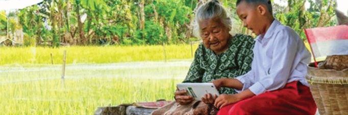
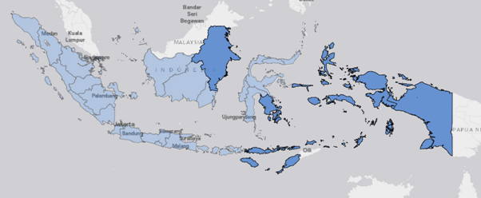
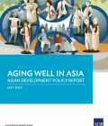
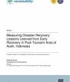
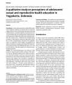
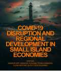
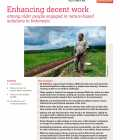

Mengukur Indonesia, rumah demi rumah.
Lembaga riset di Yogyakarta yang mengumpulkan data panel rumah tangga Indonesia sejak 2002, bersama mitra dalam dan luar negeri.



Bekerja bersama 20 lembaga donor, universitas, dan pemerintah
- The World Bank
- Asian Development Bank
- RAND Corporation
- J-PAL
- UNICEF
- Duke University
- Bappenas
- TNP2K
- tahun lembaga berdiri
- 2002
- provinsi dalam panel IFLS East
- 7
- survei panel utama
- 3
Data panel untuk riset dan kebijakan
Tiga survei panel yang dikerjakan SurveyMETER bersama mitra riset dan donor.
Indonesia Longitudinal Aging Survey
Kesehatan fisik dan mental lansia, jejaring keluarga, dan kesiapan ekonomi di hari tua. Dikerjakan bersama Asian Development Bank.
- Isi
- Data mikro, kuesioner, modul pengasuh
- Status
- Rilis 2024
Survei Aspek Kehidupan Rumah Tangga Indonesia Timur
Panel multi-topik tentang rumah tangga dan komunitas di 7 provinsi Indonesia Timur.
- Format
- STATA (.dta), SPSS, codebook PDF
- Akses
- Terbuka dengan registrasi peneliti
Studi Pemulihan Pasca Tsunami Aceh
Pemulihan ekonomi, relokasi rumah, dan ketahanan sosial warga setelah tsunami. Bersama Duke University dan World Bank.
- Desain
- Panel beberapa putaran
- Mitra
- Duke University, World Bank

Publikasi terbaru
-

Studi Kualitatif Persepsi Pendidikan Seks dan Kesehatan Reproduksi Remaja di Yogyakarta
Sikoki, Larastiti, Suriastini, Pujiastuti
-

COVID-19 Disruption and Regional Development in Small Island Economies
IRSA Conference 2024
-

Mengangkat Kerja Layak bagi Lanjut Usia yang Menekuni Solusi Berbasis Alam di Indonesia
SurveyMETER
-
Aging Well in Asia: Asian Development Policy Report 2024
Bersama Asian Development Bank
-
Mengukur Pemulihan Bencana: Pelajaran Tahap Awal Wilayah Pasca Tsunami Aceh
Jurnal Sustainability
Tentang SurveyMETER
Nama kami singkatan dari Survey, Measurement, Training, and Research. Lembaga ini dibentuk oleh tim yang lebih dari 15 tahun mengelola pengumpulan data Indonesia Family Life Survey bersama RAND Corporation.
Direktur eksekutif
- Dr. Cecep Sukria SumantriSejak Februari 2024
- Dr. Ir. Ni Wayan Suriastini, M.Phil2012 - 2024
- Bondan S. Sikoki2002 - 2012
Perjalanan
- 2002
Yayasan SurveyMETER berdiri di Yogyakarta pada 20 Februari.
- 2011
Menguatkan peran sebagai lembaga penelitian dan advokasi kebijakan publik.
- 2020
Menjadi PT SurveyMETER untuk memperluas kemitraan riset internasional.
Pernah bekerja bersama
Donor dan multilateral
The World Bank, Asian Development Bank, UNICEF, UNDP, AusAID / Prospera
Riset dan universitas
RAND Corporation, J-PAL, Innovations for Poverty Action, Duke University, Australian National University, University of Melbourne, University of Sydney, UCLA, Hitotsubashi University
Pemerintah
Bappenas, TNP2K, Kementerian Kesehatan, BNPB, Kementerian Pendidikan, Pemerintah Daerah DIY
Hubungi SurveyMETER
Untuk kerja sama riset, pertanyaan soal data, atau publikasi, hubungi kantor kami di Yogyakarta.
- Emailsm@surveymeter.org
- Telepon+62 274 4477-464
- KantorJl. Jenengan Raya No. 109, Maguwoharjo, Sleman, Yogyakarta